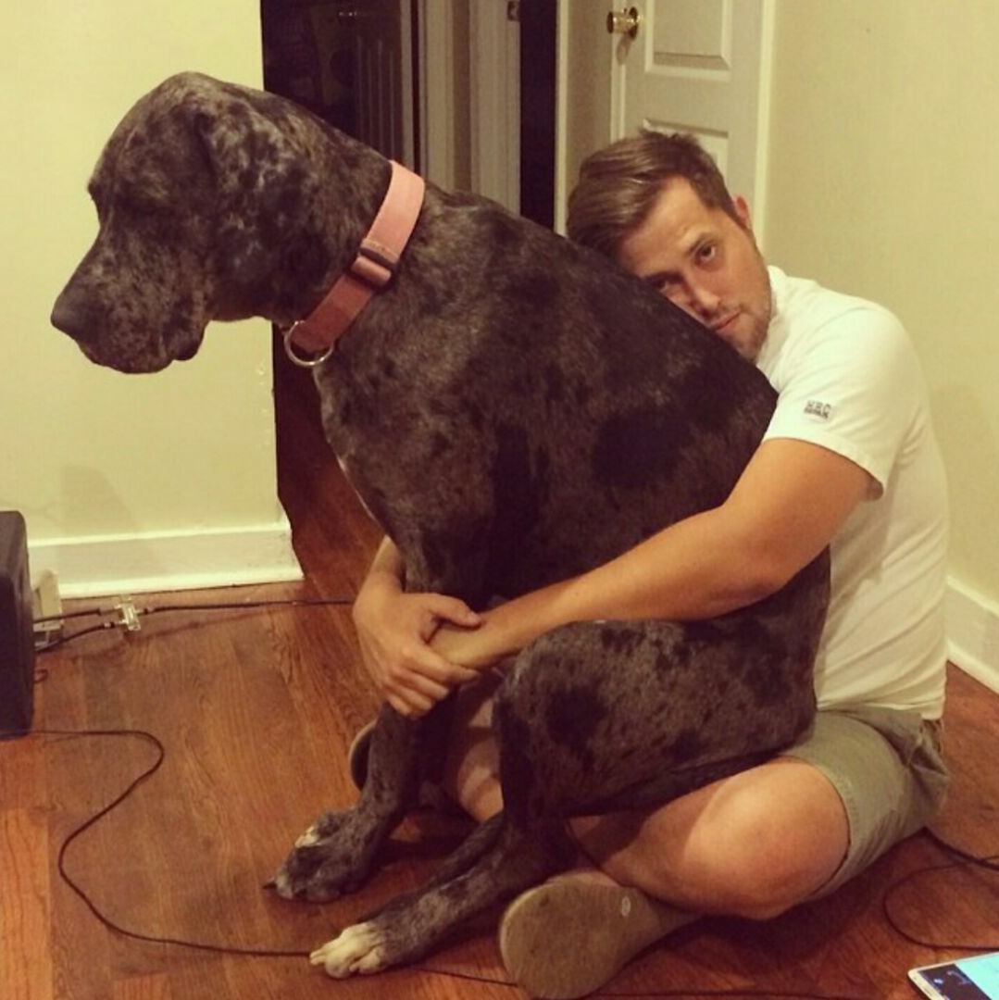

I am a learner. My passion for knowledge is matched only by my passion for travel and adventure. Raised in Dallas, Texas I knew from a young age that I wanted to see and learn as much as humanly possible. Following my spirit of adventure, I graduated from the University of Georgia in 2009 with a Bachelor’s degree in Romance Languages (Major Concentration: Spanish, Minor Concentration: French). Now you’re probably asking yourself, “Romance Languages?”, I know. I am a firm believer in following your passions and diving deeper into the things that interest you. I am a communicator. I knew that by broadening my language skills I would be able to broaden the base of people I can interact with, both personally and professionally.
After graduating college, I entered into the workforce. First gig? Business Development for a small start up Healthcare Company. And since then I have worked for various companies as an Accounts Manager, Sales Associate, I started my own manufacturing company with a retail store, I worked for a diamond distributor handling everything from grading and processing diamond parcels to logistics for all incoming and outgoing shipments and most recently, purchased and operated a retail clothing store.
I believe that every idea has merit and should be heard. I tend to speak my mind but know when it’s appropriate to be quiet. I work hard and laugh harder. I am honest, dependable, and have a determination unlike any other. I believe that going above and beyond is not just an idea but a best practice. I am creative, well spoken, and my varied career experiences have enabled me to navigate the professional environments that I have entered.
Want to get to know me more? Pick up the phone or shoot me an email. Glad to discuss your needs or even talk about why breakfast food should be available all day - it’s a no-brainer. Let’s Connect!